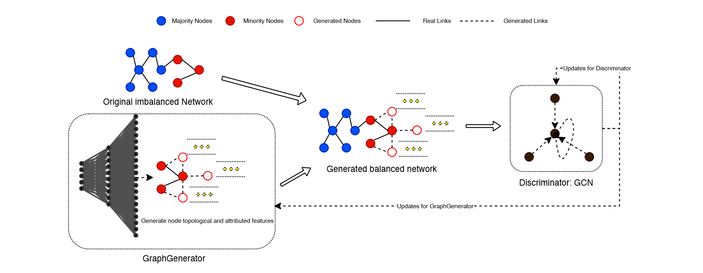

ImGAGN¶
ImGAGN:Imbalanced Network Embedding via Generative Adversarial Graph Networks
-
motivation: 大部分GNN相关的现存工作都是在假设数据集类别平衡的前提下做的，因此作者希望解决类别不平衡下的 GNN 分类问题，故作者希望设计一个图生成器来生成少数类节点以达到平衡
-
主要增强方法: 总体上是一个 GAN 的架构，通过生成少数类别的点来实现数据节点类型的平衡 
-
Graph Generator：整体模型就是一个MLP，然后输入是高斯噪声；\(n_g = n_{\text{majority}} - n_{\text{minority}}\) 是要生成的节点数量；最后输出是节点特征以及图结构；初始化的时候，假设临近节点具有相似标签，让生成点与其他少数类节点连接；而生成少数类节点的初始化特征是其连接的真实的少数类节点特征的平均值；然后通过以下loss不断优化图结构和图特征 （node insertion, feature mixing 和 graph rewiring）
\[ \begin{align*} \mathcal{L}_{\text{gen} } &=\mathcal{L}_{\text{rf} }+\mathcal{L}_{\text{mi}}+\mathcal{L}_{\text{di} }+\mathcal{L}_{\text{re} } \\ &=\sum_{i=1}^{n_{g}}-q_{i} \log \operatorname{Pr}\left(\widehat{y_{i}}=\text { real } \mid \vec{x}_{i}\right) \\ &+\sum_{i=1}^{n_{g}}-q_{i} \log \operatorname{Pr}\left(\widehat{y_{i}}=\text { minority } \mid \vec{x}_{i}\right) \\ &+\frac{1}{\left|n_{g}\right|} \sum_{i=1}^{n_{g}} \sum_{j=1}^{n_{\min }}\left\|\vec{x}_{i}-\vec{x}_{j}\right\|_{2}^{2} \\ &+\alpha|| \Theta \|_{2}^{2} \end{align*} \]其中 \(\mathcal{L}_{\text{rf} }\) 是迷惑判别器使得它无法识别原本的样本和真实的样本，即让生成的节点更加真实；\(\mathcal{L}_{\text{mi}}\) 是让判别器无法识别是少数样本点还是多数样本点，从而达到 balance 的作用；\(\mathcal{L}_{\text{di} }\) 是让生成节点的特征尽可能接近真实节点；最后一个是正则项
-
discriminator：采用一个 GCN 当判别器（GNNs 应该都可以）输出是每个节点是 \(\{(real, minority), (real, majority), (fake, minority)\}\) 的概率
\[ \begin{align*} \mathcal{L}_{\text {dis }}&=\mathcal{L}_{f a}+\mathcal{L}_{c l}+\mathcal{L}_{m m}+\mathcal{L}_{\text {ree }} \\ &=\sum_{i=1}^{n_{g}+n_{m i n}+n_{m a j}}-\left[q_{i} \log \left(\operatorname{Pr}\left(\widehat{y_{i}}=\text { fake } \mid \vec{x}_{i}\right)\right) +\left(1-q_{i}\right) \log \left(1-\operatorname{Pr}\left(\widehat{y_{i}}=\text { fake } \mid \overrightarrow{x_{i}}\right)\right)\right] \\ &+\sum_{i=1}^{n_{g}+n_{\text {min }}+n_{m a j}}-\left[q_{i} \log \left(\operatorname{Pr}\left(\widehat{y_{i}}=\text { minority } \mid \vec{x}_{i}\right)\right) +\left(1-q_{i}\right) \log \left(1-\operatorname{Pr}\left(\widehat{y_{i}}=\text { minority } \vec{x}_{i}\right)\right)\right] \\ &-\sum_{i=1}^{n_{m i n}} \sum_{j=1}^{n_{m a j}}\left\|\overrightarrow{h_{i}}-\overrightarrow{h_{j}}\right\|_{2}^{2} \\ &+\beta\|\Omega\|_{2}^{2} \end{align*} \]其中 \(\mathcal{L}_{\text{fa} }\) 是识别真伪节点； \(\mathcal{L}_{\text{cl} }\)是识别少数样本点还是多数样本点；\(\mathcal{L}_{\text{mm} }\)是尽量让每个节点特征远离；最后是一个正则项
-
方法评价: 通过ImGAGN生成的平衡类别的图数据提升了节点分类的效果；作者采用GAN架构来生成节点的思路也很新颖，也代表了一种数据增强的手段方式，但是目前只针对二分类问题，如果要面对多分类，可能需要每个类别对都训练一个 GraphGenerator，明显效率低；只使用了相同子类的节点进行新节点插入生成，对节点特征的多样性有影响。可以应用于样本不平衡的图数据，例如在社交网络中，诈骗分子是数量较少的类别，用以识别诈骗分子